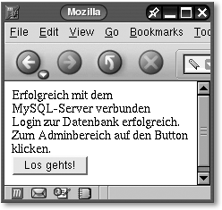
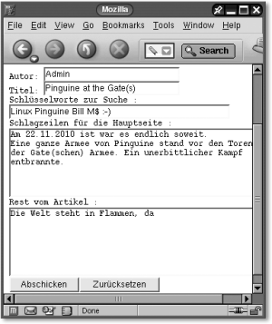

|
|
|
 12.6.3 Datenbank und Tabellen anlegen
|
||||||||||||||||||||||||||||||||||||||||||||||||||||||||||||||||||||||||||||||||||||||||||||||||||||||||||||||||||||||||||||||||||||||||||||||||||||||||||||||||||||||||||||||||||||||||||||||||||||||||||||||||||||||||||||||||||||||||||||||||||||||||||||||||||||||||||||||||||||||||||||||||||||||||||||||||||||||||||||||||||||
|
Hinweis Diesen Arbeitsschritt können (sollten) Sie in der Praxis auch mit einer CGI-Anwendung (z. B. install.cgi) ausführen lassen. Hierfür müssten Sie sich lediglich einloggen, eine Verbindung initialisieren, aufbauen und entsprechende SQL-Statements mit der Funktion mysql_real_query() ausführen lassen. Hinweis zu BLOB Auch wenn hier BLOBs verwendet wurden, sollte man sie in der Praxis nicht verwenden, weil dies die Performance der gesamten Datenbank erheblich bremsen kann. |
Zuerst soll hier die HTML-Datei zum Einloggen in die Datenbank news erstellt werden.
<html> <head> <title>Login zum Admin-Bereich</title> </head> <body bgcolor="white"> <h1>Login in den Admin-Bereich</h1> <pre> <form action="http://localhost/cgi-bin/login" method="POST"><br> Host : <input type="text" name="host" value="localhost" size=25><br> User : <input type="text" name="user" value="root" size=25><br> Passwort : <input type="password" name="passwort" size=25><br> Datenbank : <input type="text" name="datenbank" value="Name Datenbank" size=25><br> <input type="submit" value="Bestätigen"> <input type="reset" value="Reset"> </pre> </form> </body> </html>
Speichern Sie die Datei in Ihrem Heimverzeichnis, oder kopieren Sie diese als Superuser in das htdocs-Verzeichnis des Servers (im Beispiel unter SUSE ist dies das Verzeichnis /srv/www/htdocs) und passen ggf. die Zugriffsrechte an. Anschließend sollten Sie den Apache-Webserver und den MySQL-Server starten:
$ su Password:******* # cp login.html /srv/www/htdocs # chmod a+rx /srv/www/htdocs/login.html # rcapache start Starting httpd [ PHP4 ] done
Öffnen Sie Ihren Lieblingsbrowser (hier Mozilla), und geben Sie entsprechende Login-Daten ein, die Sie zuvor auch bei der MySQL-Shell verwendet haben (siehe Abbildung 12.4).
|
Abbildung 12.4 Das HTML-Formular zum Einloggen |
Bevor Sie nun den Bestätigungsbutton drücken, benötigen Sie noch die CGI-Anwendung, um die Eingabe zu überprüfen.
Die CGI-Anwendung login.c macht nichts anderes, als die Daten von der Clientanwendung (login.html), die über die POST-Methode versendet wurden, zu dekodieren und zu versuchen, mit dem MySQL-Server eine Verbindung einzugehen. Gelingt dies, wird Ihnen folgende Ausgabe das bestätigen:
|
 Abbildung 12.5 Bestätigung bei erfolgreichem Login |
Wenn dies nicht gelingt, dann sollten Sie wenigstens eine Ausgabe erhalten, warum die Verbindung nicht zustande kam. Wenn die Zugangsdaten zum MySQL-Server korrekt waren, werden diese beim Drücken des Los geht's!-Buttons an die CGI-Anwendung admin.c versteckt (hidden) mit der POST-Methode mitgeschickt.
/* login.c */ #include <stdio.h> #include <string.h> #include <stdlib.h> #include <mysql.h> #define MAX 255 #define BUFFER 4096 #include "my_cgi.h" static char *connect_param[4]; /* Mit dem MySQL-Server und den entsprechenden */ /* Verbindungsdaten eine Verbindung herstellen */ static int mein_connect (MYSQL * my, struct CGI_DATEN *ptr) { int i; for( i = 0; i < 4; i++ ) { connect_param[i] = ptr->wert; ptr = ptr->next; } /* Mit dem Server verbinden */ if (mysql_real_connect (my, /* Zeiger auf MySQL-Handler */ connect_param[0], /* Hostname */ connect_param[1], /* User-Name */ connect_param[2], /* Passwort für user_name */ connect_param[3], /* Name der Datenbank */ 0, /* Port (default=0) */ NULL, /* Socket (default=NULL) */ 0 /* keine Flags */ ) == NULL) { fprintf (stdout, "Fehler mysql_real_connect():" "%u (%s)\n", mysql_errno (my), mysql_error (my)); exit (EXIT_FAILURE); } return 1; } /* Speicher freigeben und Verbindung beenden */ static void clean_up_shutdown (MYSQL * my) { mysql_close (my); } int main (int argc, char **argv) { MYSQL *my; char *str; struct CGI_DATEN *cgi; struct CGI_DATEN *free_cgi; char buf[BUFFER]; /* Handle initialisieren */ my = mysql_init (NULL); if (my == NULL) { fprintf (stderr, " Initialisierung fehlgeschlagen\n"); exit (EXIT_FAILURE); } /* Für Fehlermeldungen */ printf("Content-Type: text/html\n\n"); /* Eingabe einlesen */ str = getdata(); if(str == NULL) { printf("Fehler beim Einlesen der Formulareingabe"); return 0; } /* Hexzeichen in ASCII-Zeichen konvertieren und aus '+' Leerzeichen machen */ hex2ascii(str); /* Liste der Formulardaten erstellen */ cgi = erstellen(str); free_cgi = cgi; if (cgi == NULL) { printf("Fehler beim Erstellen der " "Variablen/Werteliste!!\n"); return EXIT_FAILURE; } /* Mit dem Server verbinden */ if (mein_connect (my, cgi) != -1) printf ("Erfolgreich mit dem MySQL-Server verbunden\n"); /* Wenn alles o.k. ging, auf zum Admin-Bereich mit */ /* den DB-Daten */ sprintf(buf, "<form action=\"http://localhost/cgi-bin/admin\"" " method=\"POST\"><input type=\"hidden\" name=\"host\"" " value=\"%s\"><input type=\"hidden\" name=\"user\" " "value=\"%s\"><input type=\"hidden\" name=\"passwort\" " "value=\"%s\"><input type=\"hidden\" name=\"datenbank\" " "value=\"%s\">Login zur Datenbank erfolgreich. Zum" " Admin-Bereich auf den Button klicken.<br><input " "type=\"submit\" value=\"Los gehts!\"></form>", connect_param[0], connect_param[1], connect_param[2], connect_param[3]); printf("%s\n",buf); clean_up_shutdown( my ); return EXIT_SUCCESS; }
Um die Anwendung login auch zu verwenden, sollte diese in das Verzeichnis cgi-bin des Webservers kopiert und die entsprechenden Zugriffsrechte sollten angepasst werden:
$ gcc -c -I/usr/include/mysql login.c $ gcc -o login login.o -L/usr/lib/mysql -lmysqlclient $su Password:******** # cp login /srv/www/cgi-bin # chmod a+rx /srv/www/cgi-bin/login
Nach der Betätigung des Los geht's!-Buttons wird die CGI-Anwendung admin zur Eingabe von neuen News gestartet.
|
 Abbildung 12.6 Erstellen eines neuen Newseintrags |
Die Anwendung admin holt zuerst wieder die Daten, die nötig sind, um anschließend Einträge in die Datenbank zu machen. Die Daten werden danach wieder dekodiert und für die Weitergabe aufbewahrt. Jetzt können Sie im HTML-Formular Daten für die neuesten News eingeben. Bei Betätigung des Abschicken-Buttons werden diese Daten mitsamt den Daten für die Verbindung zum MySQL-Server (wieder versteckt) an die CGI-Anwendung add_db weitergegeben. Hier also der Quellcode zur CGI-Anwendung admin:
/* admin.c */ #include <stdio.h> #include <stdlib.h> #include <string.h> #include <mysql.h> #include "my_cgi.h" #define MAX 255 #define BUFFER 4096 static char *connect_param[4]; static int fetch_login_db( void ) { int i; char *str; struct CGI_DATEN *cgi; /* Für Fehlermeldungen */ printf("Content-Type: text/html\n\n"); /* Eingabe einlesen */ str = getdata(); if(str == NULL) { printf("Fehler beim Einlesen der Formulareingabe"); return 0; } /* Hexzeichen in ASCII-Zeichen konvertieren und aus '+' */ /* Leerzeichen machen */ hex2ascii(str); /* Liste der Formulardaten erstellen */ cgi = erstellen(str); if (cgi == NULL) { printf("Fehler beim Erstellen der " "Variablen/Werteliste!!\n"); return 0; } for( i = 0; i < 4; i++ ) { connect_param[i] = cgi->wert; cgi = cgi->next; } return 1; } static void print_admin_input( void ) { char buf[BUFFER]; sprintf(buf, "<h1>Eintragen von neuen Artikeln</h1>" "<form action=\"http://localhost/cgi-bin/add_db\" " "method=\"POST\">" "<input type=\"hidden\" name=\"host\" value=\"%s\">" "<input type=\"hidden\" name=\"user\" value=\"%s\">" "<input type=\"hidden\" name=\"passwort\" value=\"%s\">" "<input type=\"hidden\" name=\"datenbank\" value=\"%s\">" "<pre>Autor: <input type=\"text\" name=\"autor\" " "value=\"Admin\" size=30><br>" "Titel: <input type=\"text\" name=\"titel\" size=30><br>" "Schlüsselworte zur Suche :\n" "<input type=\"text\" name=\"suche\" value=\"Suchwörter\"" " size=50><br>" "Schlagzeilen für die Hauptseite :\n" "<textarea name=\"beschreibung\" cols=\"50\" " "rows=\"6\"></textarea><br>" "Rest vom Artikel :\n" "<textarea name=\"beschreibung\" cols=\"50\" " "rows=\"6\"></textarea><br>" "<input type=\"submit\" value=\"Abschicken\"><input " "type=\"reset\" value=\"Zurücksetzen\"></pre></form>", connect_param[0],connect_param[1],connect_param[2], connect_param[3]); printf("%s",buf); } int main (int argc, char **argv) { /* Login-Daten für die Datenbank abholen */ fetch_login_db( ); /* Eingabeformular für Admin ausgeben */ print_admin_input( ); return EXIT_SUCCESS; }
Die Anwendung zur Ausführung vorbereiten:
$ gcc -c -I/usr/include/mysql admin.c $ gcc -o admin admin.o -L/usr/lib/mysql -lmysqlclient $ su Password:******* # cp admin /srv/www/cgi-bin # chmod a+rx /srv/www/cgi-bin/admin
|
Hinweis Damit Sie sich nicht immer, wie im Beispiel, als su einloggen müssen, wäre es sinnvoller, dem User Schreibrechte für das cgi-Verzeichnis zu erteilen. |
Die CGI-Anwendung add_db holt nun alle Daten ab, die sie von der Anwendung admin per POST-Methode erhalten hat, und dekodiert diese Daten in einer leserlichen Form. Anschließend wird eine Verbindung mit dem Server hergestellt, und die Daten werden in die Datenbank mittels mysql_real_query() eingetragen. Konnten die Daten erfolgreich eingetragen werden, erscheint folgende Ausgabe auf Ihrem Browser:
|
Abbildung 12.7 Bei Erfolg gibt es eine entsprechende Meldung. |
/* add_db.c * Eine Gedächtnisstütze: mysql> create database news; mysql> use news; mysql> create table data( datum TIMESTAMP, autor VARCHAR(200), -> suche VARCHAR(200), title VARCHAR(150), beschreibung BLOB, -> inhalt BLOB); mysql> INSERT INTO data (autor, title, suche, beschreibung, -> inhalt) -> VALUES ( -> "Jürgen Wolf", "Ein Testtitel", "suchwörter test titel", -> "Beispiel, wie man mit MySQL und der C-API ein eigenes -> Newssystem erstellt", -> "Der eigentliche Inhalt nach den Schlagzeilen zum Thema -> MySQL und der C-API"); */ #include <stdio.h> #include <string.h> #include <stdlib.h> #include <mysql.h> #define MAX 255 #define BUFFER 4096 #include "my_cgi.h" enum { HOST, USER, PASSWORT, DATENBANK, AUTOR, TITLE, SUCHE, BESCHREIBUNG, INHALT}; static char *param[9]; static int fetch_data( void ) { int i; char *str; struct CGI_DATEN *cgi; /* Für Fehlermeldungen */ printf("Content-Type: text/html\n\n"); /* Eingabe einlesen */ str = getdata(); if(str == NULL) { printf("Fehler beim Einlesen der Formulareingabe"); return 0; } /* Hexzeichen in ASCII-Zeichen konvertieren und aus '+' */ /* Leerzeichen machen */ hex2ascii(str); /* Liste der Formulardaten erstellen */ cgi = erstellen(str); if (cgi == NULL) { printf("Fehler beim Erstellen der " "Variablen/Werteliste!!\n"); return 0; } for( i = 0; i < 9; i++ ) { param[i] = cgi->wert; cgi = cgi->next; } return 1; } /* Mit dem MySQL-Server und den entsprechenden */ /* Verbindungsdaten eine Verbindung herstellen */ static int mein_connect (MYSQL * my) { /* Mit dem Server verbinden */ if (mysql_real_connect (my, /* Zeiger auf MYSQL-Handler */ param[HOST], /* Hostname */ param[USER], /* User-Name */ param[PASSWORT], /* Passwort für user_name */ param[DATENBANK], /* Name der Datenbank */ 0, /* Port (default=0) */ NULL, /* Socket (default=NULL) */ 0 /* keine Flags */ ) == NULL) { fprintf (stdout, "Fehler mysql_real_connect():" "%u (%s)\n", mysql_errno (my), mysql_error (my)); exit (EXIT_FAILURE); } return 1; } static void insert_into_db( MYSQL *my ) { char buf[8192]; /* Tabelle */ sprintf(buf, "INSERT INTO data (autor, title, suche, " "beschreibung, inhalt)" " VALUES (\'%s\','\%s\','\%s\', '\%s\', \'%s\');" ,param[AUTOR], param[TITLE], param[SUCHE], param[BESCHREIBUNG], param[INHALT]); /* printf("%s\n", buf); */ if(mysql_real_query(my, buf, strlen(buf)) !=0) { fprintf (stdout, "Fehler mysql_real_connect():" "%u (%s)\n", mysql_errno (my), mysql_error (my)); exit (EXIT_FAILURE); } } /* Speicher freigeben und Verbindung beenden */ static void clean_up_shutdown (MYSQL * my) { mysql_close (my); } int main (int argc, char **argv) { MYSQL *my; /* Daten abholen und für die Eintragung vorbereiten */ fetch_data(); /* Handle initialisieren */ my = mysql_init (NULL); if (my == NULL) { fprintf (stderr, " Initialisierung fehlgeschlagen\n"); exit (EXIT_FAILURE); } /* Mit dem Server verbinden */ if (mein_connect (my) != -1) printf ("Erfolgreich mit dem MySQL-Server verbunden\n"); /* Daten in die Datenbank schreiben */ insert_into_db( my ); printf("Eintragung erfolgreich<br>Zur Indexseite geht´s " "<a href=\"http://localhost/cgi-bin/index_news\">hier </a>" " und für weitere Artikel klicken Sie bitte" " <a href=\"http://localhost/login.html\">hier</a>\n"); clean_up_shutdown( my ); return EXIT_SUCCESS; }
Die Anwendung für die Ausführung vorbereiten:
$ gcc -c -I/usr/include/mysql add_db.c $ gcc -o add_db add_db.o -L/usr/lib/mysql -lmysqlclient $ su Password:******** # cp add_db /srv/www/cgi-bin # chmod a+rx /srv/www/cgi-bin/add_db
Jetzt können Sie entweder einen weiteren Newseintrag machen oder zur Hauptseite index_news, auf der sich die Schlagzeilen mit einer Kurzbeschreibung befinden, wechseln. Für einen weiteren Newseintrag habe ich mich für ein erneutes Login entschieden. Wie Sie in der Praxis dabei vorgehen, bleibt Ihnen überlassen.
Nach den Anwendungen für den administrativen Teil folgen nun zwei CGI-Anwendungen für den Websurfer; zuerst die Titelseite mit den Schlagzeilen in Kurzform – index_news. Da die Anwendung index_news für jedermann zugänglich sein soll, wurden hierbei die Daten für den Zugriff auf dem Datenbankserver fest einkompiliert. Hierbei wäre es nicht schlecht, wenn Sie hierfür, sofern Sie die Rechte dazu haben, einen extra User (z. B. Anonymous) mit entsprechenden (Lese-)Rechten für die Datenbank news einrichten. Die Anwendung macht nichts anderes, als die Schlagzeilen aus der Datenbank news auszulesen und in lesbarere Form für den Webbrowser aufzubereiten, wie folgende Abbildung demonstrieren soll:
|
Abbildung 12.8 Die Startseite und auch das Portal des Newssystems |
/* index_news.c */ #include <stdio.h> #include <stdlib.h> #include <string.h> #include <mysql.h> #define MAX 255 #define BUFFER 4096 #include "my_cgi.h" #define HOST "localhost" #define USER "root" #define PASSWORT "k4p6m3o3" #define DATENBANK "news" static char *timestamp2date( char * ); static char date[11]; /* Mit dem MySQL-Server und den entsprechenden */ /* Verbindungsdaten eine Verbindung herstellen */ static int mein_connect (MYSQL * my) { /* Mit dem Server verbinden */ if (mysql_real_connect (my, /* Zeiger auf MYSQL-Handler */ HOST, /* Hostname */ USER, /* User-Name */ PASSWORT, /* Passwort für user_name */ DATENBANK, /* Name der Datenbank */ 0, /* Port (default=0) */ NULL, /* Socket (default=NULL) */ 0 /* keine Flags */ ) == NULL) { fprintf (stdout, "Fehler mysql_real_connect():" "%u (%s)\n", mysql_errno (my), mysql_error (my)); exit (EXIT_FAILURE); } return 1; } static void select_data_from_db( MYSQL *my ) { char *tmp[6]; MYSQL_ROW row; MYSQL_RES *mysql_res; unsigned long anzahl_reihen; unsigned int i; char buf[BUF] = "SELECT * FROM data ORDER BY datum DESC"; char bigbuf[8096]; if(mysql_real_query(my, buf, (strlen(buf)))!=0) { fprintf (stdout, "Fehler mysql_real_connect():" "%u (%s)\n", mysql_errno (my), mysql_error (my)); exit (EXIT_FAILURE); } /* Daten der Anfrage abholen */ mysql_res = mysql_store_result(my); /* Anzahl der gefundenen Datensätze ermitteln */ anzahl_reihen = (unsigned long) mysql_num_rows (mysql_res); printf ("Anzahl gefundener Artikel: %lu\n\n<br><br>", anzahl_reihen); printf("<table width=\"90 %\"> "); /* Gefundenen Datensatz bzw. Datensätze ausgeben */ while ((row = mysql_fetch_row (mysql_res)) != NULL) { /* Einzelne Spalten der Zeile ausgeben */ for (i = 0; i < mysql_num_fields(mysql_res); i ++) tmp[i] = row[i]; sprintf(bigbuf, "<tr><td bgcolor=\"darkgrey\">Titel: " " %s</td></tr><tr><td>Schlagzeile :%s</td></tr>" "<tr><td bgcolor=\"darkgrey\" align=\"right\">Datum " ":%s | Autor :%s | " "<a href=\"http://localhost/cgi-bin/search_db?full=%s\">" "Den kompletten Artikel lesen</a> |" "</td></tr><td><tr> </tr></td>", tmp[3], tmp[4], timestamp2date(tmp[0]), tmp[1], tmp[3]); printf("%s",bigbuf); } printf("</table>"); printf("<hr><br>" "<form action=\"http://localhost/cgi-bin/search_db\" " "method=\"POST\">Nach Artikel suchen <br>" "<input type=\"text\" maxlength=\"30\"name=\"suchstring\">" "<input type=\"submit\" value=\"Suche\"></form>"); /* Speicherplatz wieder freigeben */ mysql_free_result(mysql_res); } /* Extrahieren des Timestamp-Formats */ /* bspw. 200404121602... das Datum */ /* und gibt einen String à la DD:MM:YYYY zurück */ static char *timestamp2date( char *timestamp ) { char *ptr = NULL; date[0] = '\0'; ptr = timestamp+6; strncpy(date, ptr, 2); strcat(date, "."); ptr = timestamp+4; strncpy(&date[3], ptr, 2); strcat(date, "."); ptr = timestamp; strncpy(&date[6], ptr, 4); date[10] = '\0'; ptr = date; return ptr; } /* Speicher freigeben und Verbindung beenden */ static void clean_up_shutdown (MYSQL * my) { mysql_close (my); } static void print_header( ) { printf("<html><head><title>News</title></head>" "<body bgcolor=\"white\">" "<h1>Vorhandene News</h1>"); } static void print_footer( ) { printf("</body></html>"); } int main (int argc, char **argv) { MYSQL *my; /* Handle initialisieren */ my = mysql_init (NULL); if (my == NULL) { fprintf (stderr, " Initialisierung fehlgeschlagen\n"); exit (EXIT_FAILURE); } /* Für Fehlermeldungen */ printf("Content-Type: text/html\n\n"); /* Mit dem Server verbinden */ if (mein_connect (my) != -1) print_header( ); /* Daten aus der Datenbank holen */ select_data_from_db( my ); print_footer( ); clean_up_shutdown( my ); return EXIT_SUCCESS; }
Die Anwendung zur Ausführung vorbereiten:
$ gcc -c -I/usr/include/mysql index_news.c $ gcc -o index_news index_news.o -L/usr/lib/mysql -lmysqlclient $ su Password:******** # cp index_news /srv/www/cgi-bin # chmod a+rx /srv/www/cgi-bin/index_news
Um jetzt den vollen Report einer Schlagzeile zu lesen oder nach bestimmten Artikeln zu suchen, benötigen Sie noch die CGI-Anwendung search_db, die beides erledigt. Wollen Sie den vollen Text eines Artikels lesen, wird als CGI-Variable full mitgeschickt, da ja die Anwendung search_db den mitgesandten Text immer erst dekodiert. Ist die Variable full angegeben, wird der Wert der Variable, der dem Titel (title VARCHAR(150)) in der Datenbank news und der Tabelle data entspricht, mitsamt des kompletten Inhalts aus der Datenbank ausgelesen und in voller Form auf dem Browser ausgegeben, z. B.:
|
Abbildung 12.9 Ergebnis bei einer erfolgreichen Suche |
Ist die erste dekodierte Variable nicht full, wurde eine Suchanfrage gestartet. Für die Suche wurde ja in der Tabelle extra eine Spalte eingerichtet (suche VARCHAR(200)), in der nach speziellen von Ihnen vorgegebenen Schlüsselwörtern gesucht wird. Wurde Entsprechendes gefunden, wird auch dies in leserfreundlichem Stil über den Webbrowser ausgegeben.
/* search_db.c */ #include <stdio.h> #include <stdlib.h> #include <string.h> #include <mysql.h> #define MAX 255 #define BUFFER 4096 #include "my_cgi.h" #define HOST "localhost" #define USER "root" #define PASSWORT "k4p6m3o3" #define DATENBANK "news" static char *search_string; static char *news_full; static char *timestamp2date( char * ); static char date[11]; static int fetch_http_string (void) { char *str; struct CGI_DATEN *cgi; /* Eingabe einlesen */ str = getdata (); if (str == NULL) { printf ("Fehler beim Einlesen von der Formulareingabe"); return 0; } /* Hexzeichen in ASCII-Zeichen konvertieren und aus '+' */ /* Leerzeichen machen */ hex2ascii (str); /* Liste der Formulardaten erstellen */ cgi = erstellen (str); if (cgi == NULL) { printf ("Fehler beim Erstellen der " "Variablen/Werteliste!!\n"); return 0; } /* Suche nur mit einem Suchbegriff möglich */ news_full = cgi->variable; search_string = cgi->wert; return 1; } /* Mit dem MySQL-Server und den entsprechenden */ /* Verbindungsdaten eine Verbindung herstellen */ static int mein_connect (MYSQL * my) { /* Mit dem Server verbinden */ if (mysql_real_connect (my, /* Zeiger auf MYSQL-Handler */ HOST, /* Hostname */ USER, /* User-Name */ PASSWORT, /* Passwort für user_name */ DATENBANK, /* Name der Datenbank */ 0, /* Port (default=0) */ NULL, /* Socket (default=NULL) */ 0 /* keine Flags */ ) == NULL) { fprintf (stdout, "Fehler mysql_real_connect():" "%u (%s)\n", mysql_errno (my), mysql_error (my)); exit (EXIT_FAILURE); } return 1; } /* Mit Suche integrieren */ static void search_data_from_db (MYSQL * my) { char *tmp[6]; MYSQL_ROW row; MYSQL_RES *mysql_res; unsigned long anzahl_reihen; unsigned int i; char buf[BUF]; char bigbuf[8096]; if (strcmp (news_full, "full") == 0) { sprintf ( buf, "SELECT * FROM data WHERE title=\'%s\';", search_string ); /* printf ("%s", buf); */ if (mysql_real_query (my, buf, strlen(buf)) != 0) { fprintf (stdout, "Fehler mysql_real_connect():" "%u (%s)\n", mysql_errno (my), mysql_error (my)); exit (EXIT_FAILURE); } /* Daten der Anfrage abholen */ mysql_res = mysql_store_result (my); printf ("<table width=\"90 %\">"); /* Gefundenen Datensatz bzw. Datensätze ausgeben */ while ((row = mysql_fetch_row (mysql_res)) != NULL) { /* Einzelne Spalten der Zeile ausgeben */ for (i = 0; i < mysql_num_fields (mysql_res); i++) tmp[i] = row[i]; sprintf (bigbuf, "<tr><td bgcolor=\"darkgrey\">Titel: %s</td></tr>" "<tr><td>Schlagzeile :%s<br><br>Inhalt: %s</td></tr>" "<tr><td bgcolor=\"darkgrey\" align=\"right\">" " Datum :%s | Autor :%s |" "</td></tr><td><tr> </tr></td>", tmp[3], tmp[4],tmp[5], timestamp2date(tmp[0]), tmp[1]); printf ("%s", bigbuf); } printf ("</table>"); printf ("<hr><br>" "<form action=\"http://localhost/cgi-bin/search_db\"" " method=\"POST\">" "Nach Artikel suchen <br>" "<input type=\"text\" maxlength=\"30\"name=\"suchstring\">" "<input type=\"submit\" value=\"Suche\"></form>"); } else { sprintf (buf, "SELECT * FROM data WHERE suche LIKE \'%%%s%%\'" " ORDER BY datum DESC;", search_string); /* printf ("%s", buf); */ if (mysql_real_query (my, buf, strlen(buf)) != 0) { fprintf (stdout, "Fehler mysql_real_connect():" "%u (%s)\n", mysql_errno (my), mysql_error (my)); exit (EXIT_FAILURE); } /* Daten der Anfrage abholen */ mysql_res = mysql_store_result (my); /* Anzahl der gefundenen Datensätze ermitteln */ anzahl_reihen = (unsigned long) mysql_num_rows (mysql_res); printf ("Anzahl gefundener Artikel: %lu\n\n<br><br>", anzahl_reihen); printf ("<table width=\"90 %\">"); /* Gefundenen Datensatz bzw. Datensätze ausgeben */ while ((row = mysql_fetch_row (mysql_res)) != NULL) { /* Einzelne Spalten der Zeile ausgeben */ for (i = 0; i < mysql_num_fields (mysql_res); i++) tmp[i] = row[i]; sprintf (bigbuf, "<tr><td bgcolor=\"darkgrey\">Titel: %s</td>" "</tr><tr><td>Schlagzeile :%s</td></tr>" "<tr><td bgcolor=\"darkgrey\" align=\"right\">" "Datum :%s | Autor :%s | <a href=\"" "http://localhost/cgi-bin/search_db?full=%s\">" "Den kompletten Artikel lesen</a> |" "</td></tr><td><tr> </tr></td>", tmp[3], tmp[4], timestamp2date(tmp[0]), tmp[1], tmp[3]); printf ("%s", bigbuf); } printf ("</table>"); printf ("<hr><br><form action=\"" "http://localhost/cgi-bin/search_db\" method=\"POST\">" "Nach Artikel suchen <br><input type=\"text\"" " maxlength=\"30\"name=\"suchstring\">" "<input type=\"submit\" value=\"Suche\"></form>"); } /* Speicherplatz wieder freigeben */ mysql_free_result (mysql_res); } /* Extrahieren des Timestamp-Formats */ /* bspw. 200404121602... das Datum */ /* und gibt einen String à la DD:MM:YYYY zurück */ static char *timestamp2date( char *timestamp ) { char *ptr = NULL; date[0] = '\0'; ptr = timestamp+6; strncpy(date, ptr, 2); strcat(date, "."); ptr = timestamp+4; strncpy(&date[3], ptr, 2); strcat(date, "."); ptr = timestamp; strncpy(&date[6], ptr, 4); date[10] = '\0'; ptr = date; return ptr; } /* Speicher freigeben und Verbindung beenden */ static void clean_up_shutdown (MYSQL * my) { mysql_close (my); } void print_header () { printf ( "<html><head><title>News</title></head>" "<body bgcolor=\"white\">" "<h1>News</h1>"); } static void print_footer (void) { printf ("</body></html>"); } int main (int argc, char **argv) { MYSQL *my; /* Handle initialisieren */ my = mysql_init (NULL); if (my == NULL) { fprintf (stderr, " Initialisierung fehlgeschlagen\n"); exit (EXIT_FAILURE); } /* Für Fehlermeldungen */ printf ("Content-Type: text/html\n\n"); /* Mit dem Server verbinden */ if (mein_connect (my) != -1) print_header (); /* Suchstring auslesen */ fetch_http_string (); /* Daten aus der Datenbank holen */ search_data_from_db (my); print_footer (); clean_up_shutdown (my); return EXIT_SUCCESS; }
Die Anwendung zu Ausführung vorbereiten:
$ gcc -c -I/usr/include/mysql search_db.c $ gcc -o search_db search_db.o -L/usr/lib/mysql -lmysqlclient $ su Password:******** # cp search_db /srv/www/cgi-bin # chmod a+rwx /srv/www/cgi-bin/search_db
Der Anwender kann jetzt die aktuellen Schlagzeilen immer mit der URL http://localhost/cgi-bin/index_news in seinem Browser aufrufen. Dies nun auf Ihre Webseite zu portieren, sollte je nach Erfahrung nicht allzu schwer sein.
Jetzt haben Sie gesehen, dass es im Prinzip gar nicht so schwer ist, eigene MySQL-Anwendungen zu entwerfen. In diesem Beispiel haben Sie als Pseudo-GUI den Webbrowser verwendet, was auch den Vorteil hat, dass die Clientseite plattformunabhängig ist. Im Großen und Ganzen ist es auch nicht allzu schwer, wenn Sie Kenntnisse zur GUI-Programmierung mit z. B. GTK+ oder Qt haben, diese Anwendung mit einer echten grafischen Oberfläche zu versehen. Sie müssen lediglich wissen, wie man eine Abfrage an den Server stellt (mysql_real_query()) und wie Sie die Ergebnismenge, sofern eine zurückgegeben wird, bearbeiten können. All dies haben Sie hier jetzt mehrfach gesehen.
Nicht behandelt wurde das Casten von MySQL-Rückgabewerten. Angenommen man hat ein INT(2)-Feld namens zahl. Folgendes wird nicht funktionieren, es muss gecastet werden:
int i; mysql_real_query( &mysql, "SELECT 'zahl' FROM 'table' LIMIT 1", 34); result = mysql_store_result(&mysql); row = mysql_fetch_row(result); i = row[0];
In diesem Fall müsste es heißen:
i = (atoi)row[0];
Wohl wird aber dieses hier gehen:
printf("%s\n", row[0]);
| << zurück |
|
||||||||||||
|
||||||||||||
|
||||||||||||
|
||||||||||||
Copyright © Rheinwerk Verlag GmbH 2006
Für Ihren privaten Gebrauch dürfen Sie die Online-Version natürlich
ausdrucken. Ansonsten unterliegt das <openbook> denselben Bestimmungen,
wie die gebundene Ausgabe: Das Werk einschließlich aller seiner Teile ist
urheberrechtlich geschützt. Alle Rechte vorbehalten einschließlich der
Vervielfältigung, Übersetzung, Mikroverfilmung sowie Einspeicherung und
Verarbeitung in elektronischen Systemen.


 bestellen
bestellen